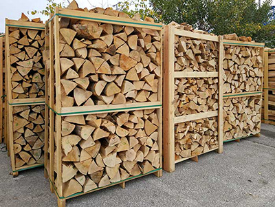

Using the appropriate fuel is essential in the safe usage of any fire apparatus. This month, we’re going to be focusing on firewood in Waretown and the entire Jersey Shore. Wood burning stoves and fireplaces are very popular amenities in homes located in any environment that experiences freezing temperatures. Ocean County certainly has experienced some cold winters. With the addition of a wood burning stove or fireplace, you can reduce your energy usage and bill, improve your indoor ambiance, and have a reliable source of heat in case of power outages. Plus, they add value to your home because they are so desirable. If you do have a fireplace, proper usage is essential for safety. Selecting the right wood, building an efficient fire, and having your chimney cleaned yearly are just some of the “rules” of correct wood burning stove use.The Best Woods for Burning Indoors are Dense
The first step, picking the right wood, is one of the most important decisions to make before starting a fire indoors. For a fireplace or wood burning stove, firewood should be dense. This means hardwoods make an efficient firewood because they provide more wood to burn per piece than lighter, more hollow wood. Some good types of hard, dense woods are Hickory, Birch, and Red and White Oak. Soft wood is better for outdoor fire pits. They are easy to light making them perfect for kindling, but can produce more smoke than hardwoods which is why they are preferable for outdoor use. Some popular soft woods for outdoor fires are Cedar, Pine, and Spruce.
What to Avoid When Selecting Firewood in Waretown
When discussing firewood, you will often hear the term green wood. But, what does this mean? Unseasoned wood is also referred to as green wood. This wood is recently cut and, therefore, has a high moisture content. Fresh wood should not be used, especially indoors because of this high moisture. Moisture produces more smoke which produces more creosote in your chimney.
Creosote is a highly flammable substance that is a normal side-effect of fires. An annual chimney cleaning will keep this dangerous build-up at bay keeping your fireplace safe. When purchasing firewood in Waretown, avoid green, or unseasoned, wood at all costs unless you are planning on storing it for next season.
Moisture Content for Firewood in Waretown
For the safest use of your indoor fireplace, the moisture content of the wood should be below 20%. Using a wood higher in moisture content than that can cause an unsafe amount of creosote to build-up in your chimney. This is especially important for smaller chimneys like those for wood burning stoves. Burning wet wood can result in an amount of creosote that can block a chimney in one season. This leads to chimney fires, smoke blow back, and other dangerous situations. An easy way to test your wood for it’s moisture content is with a moisture meter.
Proper Firewood Storage
Ideally, firewood would be stored outdoors, cleanly stacked, and left uncovered. This allows for the best airflow around the wood allowing it to dry out. During rainy or snowy seasons, however, leaving wood uncovered is not always an option. When it is necessary to cover firewood in Waretown, use an appropriate wood cover rather than a tarp or another material that doesn’t allow air flow. Avoid leaving your firewood under a lot of other trees and never leave it in a pile. Using a wood rack or pallet is also helpful to allow for air to circulate all around the wood.